GIST é a sigla de tumor estromal gastrointestinal. O nome já entrega a primeira informação que importa: "estromal" aponta para o estroma, o tecido de sustentação — e não para o epitélio que reveste o tubo digestivo. É aí que mora a virada. O câncer gástrico que a maioria estuda primeiro, o adenocarcinoma, nasce do epitélio glandular da mucosa. O GIST não. Ele nasce do mesênquima, o tecido conjuntivo embrionário que dá origem a músculo, vaso, osso, gordura — tudo que sustenta, em vez de revestir.
E todo tumor maligno de origem mesenquimal tem um nome de família: sarcoma. Logo, a corrente lógica fecha sozinha: o GIST nasce do mesênquima → é um tumor mesenquimal → é um sarcoma. As três expressões — "GIST", "sarcoma" e "tumor mesenquimal" — descrevem o mesmo objeto por ângulos diferentes.
De onde nasce cada câncer gástrico. Clique nos nós desenhados (mouse, toque ou teclado) para ver de onde desce cada tumor.
Árvore de origem
Toque num ramo para ver de onde desce cada tumor gástrico.
Por que isso é tão cobrado? Porque a banca adora testar se o aluno sabe que o GIST não é adenocarcinoma. Quase tudo que torna o GIST estranho — não biopsiar, não tirar linfonodo, ter remédio-alvo — decorre dessa raiz mesenquimal. Quando as palavras sarcoma ou tumor mesenquimal aparecem ligadas a uma lesão gástrica, o reflexo treinado é um só: pense em GIST.
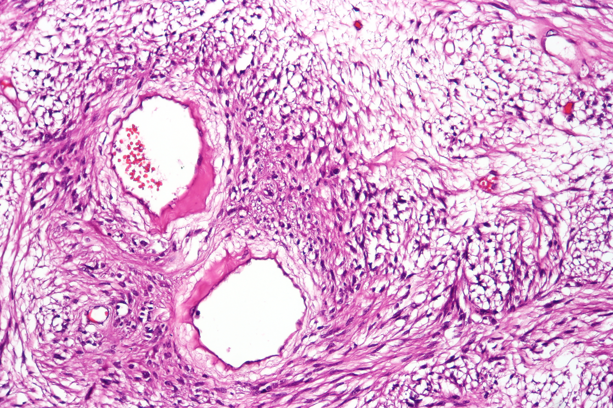
Achado: repare nos feixes de células fusiformes (alongadas), com estroma mixoide e vasos — o padrão mesenquimal que confirma a natureza sarcomatosa do GIST, oposto do epitélio glandular do adenocarcinoma.
Histologia H&E. CoRus13, Wikimedia Commons · CC BY-SA 4.0. Ver fonte.
Por que importa na prática
A primeira coisa que define toda a conduta do GIST é ele não ser adenocarcinoma. Errar a classe é errar tudo a jusante.
Resumo operacional
GIST = sarcoma = tumor mesenquimal; nasce do estroma, não do epitélio. Definida a família do tumor, falta a célula exata de onde ele brota — e ela tem uma função surpreendente no estômago.
Quiz — fixação
O GIST é classificado como qual tipo de neoplasia?
Gabarito: B. GIST nasce do mesênquima (estroma), e tumor maligno mesenquimal = sarcoma.
Por que cair na A: quem marca A confunde com o adenocarcinoma, o câncer gástrico epitelial — exatamente o erro que a banca quer pegar.
"Sarcoma" e "tumor mesenquimal" descrevem origens histológicas diferentes do GIST.
Falso. São o mesmo conceito por ângulos diferentes: sarcoma é o nome do tumor maligno mesenquimal.
O GIST nasce do ______, e não do epitélio glandular como o adenocarcinoma.
Mesênquima (estroma). O tecido de sustentação — daí a natureza sarcomatosa.
Página 2 / 13
Células de CajalMarcapassoPlexo mientérico
?
O que um marcapasso tem a ver com um tumor de estômago — e por que isso explica onde o GIST aparece?
A célula que marca o ritmo do estômago
O GIST se origina nas células intersticiais de Cajal. Essas células têm uma função elegante: são o marcapasso endógeno do trato gastrointestinal. Ficam alojadas no plexo mientérico, entre as camadas musculares da parede, e disparam o ritmo elétrico que comanda a peristalse — a onda de contração que empurra o alimento adiante. Sem elas, o intestino não teria cadência própria.
Aqui entra a peça que fecha o raciocínio epidemiológico. O estômago concentra uma grande quantidade dessas células de Cajal — faz sentido, já que precisa de um sistema de motilidade robusto para triturar e esvaziar. E onde há mais células de origem, há mais chance de uma delas se transformar. É exatamente essa abundância de células de Cajal no estômago que explica por que o GIST acontece mais nesse órgão do que em qualquer outro ponto do tubo digestivo.
Repare na beleza da cadeia causal: não é coincidência que o GIST seja predominantemente gástrico. A topografia do tumor é consequência direta da biologia da célula que o origina. Quem entende isso não precisa decorar "60% gástrico" como um número solto — o número vira conclusão.
Onde mora o marcapasso do estômago. Clique nas camadas desenhadas (mouse, toque ou teclado) para ver o que cada uma faz.
Parede gástrica em camadas
Toque numa camada para ver o que ela faz — e onde mora o marcapasso.
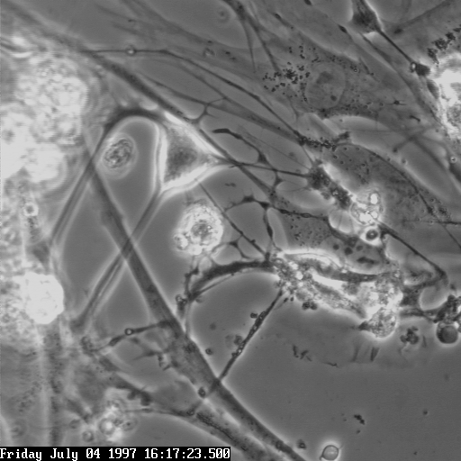
Achado: a célula intersticial de Cajal isolada, com corpo estrelado e prolongamentos ramificados — o marcapasso da peristalse de onde nasce o GIST.
Microscopia de contraste de fase. Topictyper (Lars Thomsen), Wikimedia Commons · CC BY-SA 4.0. Ver fonte.
Não confunda
Célula de Cajal
No meio da parede (intramural), na muscular própria. O GIST nasce aqui.
Célula epitelial da mucosa
Na superfície. Dá origem ao adenocarcinoma — outra história.
Revisão ativa
Se o estômago não tivesse tantas células de Cajal, o que mudaria na epidemiologia do GIST?
Por que faz sentido que um tumor da célula marcapasso nasça no meio da parede, e não na superfície da mucosa?
Como você explicaria, em uma frase, a ligação entre função peristáltica e localização do tumor?
Resumo operacional
GIST nasce da célula intersticial de Cajal (marcapasso da peristalse), abundante no estômago — por isso o predomínio gástrico. Vale agora cravar os números e a hierarquia de localização.
Quiz — fixação
A célula de origem do GIST exerce qual função fisiológica normal?
Gabarito: C. A célula intersticial de Cajal é o marcapasso endógeno da motilidade GI.
Por que cair na A: confunde com a célula parietal — função gástrica, mas outra linhagem, sem relação com o GIST.
A abundância de células de Cajal no estômago ajuda a explicar por que o GIST é predominantemente gástrico.
Verdadeiro. Mais células de origem, mais chance de transformação — a topografia segue a biologia.
As células de Cajal ficam no plexo ______, entre as camadas musculares da parede.
Mientérico. Entre as duas camadas musculares — exatamente onde comanda a peristalse.
Página 3 / 13
~60% gástricoHierarquia de sítiosAlto rendimento
~60%
dos GIST nascem no estômago. É o sítio disparado mais comum — e é o GIST gástrico que cai na prova.
Por que o GIST mora no estômago
O GIST não é exclusivo do estômago. Ele pode surgir em qualquer ponto do trato gastrointestinal — intestino delgado, cólon, e até esôfago e reto, mais raramente. Mas existe uma hierarquia clara, e ela é disparada: o estômago é o local mais comum, com cerca de 60 a 70% dos casos (parte da literatura traz a faixa 50–60%; o ponto-âncora de prova é em torno de 60%). O GIST gástrico é mais frequente que o de intestino delgado — o segundo colocado — e bem mais que o de cólon.
A consequência prática dessa hierarquia é direta: como o GIST é predominantemente gástrico, ele é estudado dentro do bloco de estômago, ao lado do adenocarcinoma — o que, convenientemente, monta o terreno perfeito para a banca testar se o aluno distingue os dois.
O mapa do GIST no tubo digestivo. Clique em cada órgão desenhado (mouse, toque ou teclado) para ver a frequência.
Mapa de prevalência
Toque num órgão para ver a frequência do GIST naquele sítio.
E aqui vai a ênfase que separa quem passa de quem tropeça: o local mais comum é o estômago, e é o GIST gástrico que aparece na prova. Esse é o tipo de assunto que o aluno passa batido por achar raro — e justamente por isso cai. Não trate o GIST como curiosidade; trate como tema de alto rendimento.
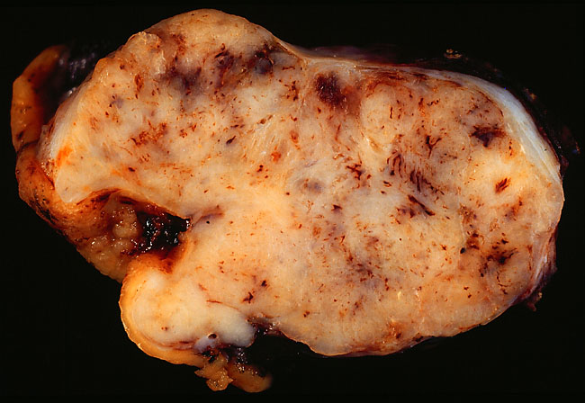
Achado: repare na massa carnosa esbranquiçada e bem delimitada, removida da parede do estômago — um GIST gástrico de 6,5 cm, no sítio mais comum do tumor.
Macroscopia. Ed Uthman, MD, Wikimedia Commons · domínio público. Ver fonte.
~60–70%dos GIST são gástricos — o estômago é, disparado, o sítio mais comum, seguido pelo intestino delgado (~30–35%); cólon, esôfago e reto são raros. Ponto-âncora de prova: em torno de 60%.
O que a banca quer
Que você saiba que o GIST mais comum e mais cobrado é o gástrico, e que por isso ele entra no bloco de estômago.
Resumo operacional
~60% dos GIST são gástricos (disparado o mais comum); é o GIST gástrico que cai na prova. Sabendo onde aparece, o próximo passo é como confirmá-lo no laboratório — pelo seu crachá imuno-histoquímico.
Quiz — fixação
Qual o sítio mais comum do GIST?
Gabarito: B. Estômago, com ~60% dos casos.
Por que cair na A: o delgado é o segundo colocado — quem marca A acerta o pódio, mas erra o degrau mais alto.
O GIST ocorre exclusivamente no estômago.
Falso. Pode surgir em qualquer ponto do TGI; o estômago é apenas o mais comum.
O GIST gástrico é mais frequente que o de ______, que é o segundo sítio mais comum.
Intestino delgado. O segundo do pódio, atrás do estômago.
Página 4 / 13
c-KIT / CD117DOG1CD34 · PDGFRA
O crachá do GIST: c-KIT e DOG1
O grande marcador do GIST é o CD117 positivo. E aqui vem um par de sinônimos que precisa estar colado na memória: CD117 é o c-KIT — os dois termos designam exatamente o mesmo marcador. CD117 é o nome do antígeno detectado pela imuno-histoquímica; c-KIT é o receptor (uma tirosina quinase) que esse antígeno representa. Quando uma lesão tumoral no estômago vem c-KIT (CD117) positivo, o pensamento é direto: GIST. Essa é a regra de ouro do diagnóstico imuno-histoquímico, positiva em mais de 95% dos casos.
Ao lado do CD117, a imuno-histoquímica moderna posicionou um segundo marcador como co-principal: o DOG1. Ele não substitui o c-KIT — soma a ele. A força da dupla está justamente na cobertura: existe uma fração de GIST que é CD117-negativa, e boa parte desses casos é DOG1-positiva. Juntos, CD117 + DOG1 capturam cerca de 99% dos GIST. Por isso, num painel atual, os dois andam emparelhados — o c-KIT como o marcador da regra de ouro, o DOG1 como a rede de segurança que pega o que o c-KIT deixa passar.
Abaixo dessa dupla ficam os marcadores secundários: o CD34 (positivo em boa parte dos casos, mas menos específico) e o PDGFRA (relevante sobretudo no subgrupo c-KIT-negativo, mais como alteração mutacional do que como coloração de rotina). Ambos já caíram em questão, mas têm peso diagnóstico menor. A hierarquia que fica é limpa: principal = c-KIT/CD117 (+ DOG1 ao lado); secundários = CD34 e PDGFRA.
O painel imuno do GIST, em hierarquia. Clique em cada crachá desenhado (mouse, toque ou teclado) para ver seu papel.
Painel imuno-histoquímico
Toque num crachá para ver o papel de cada marcador.
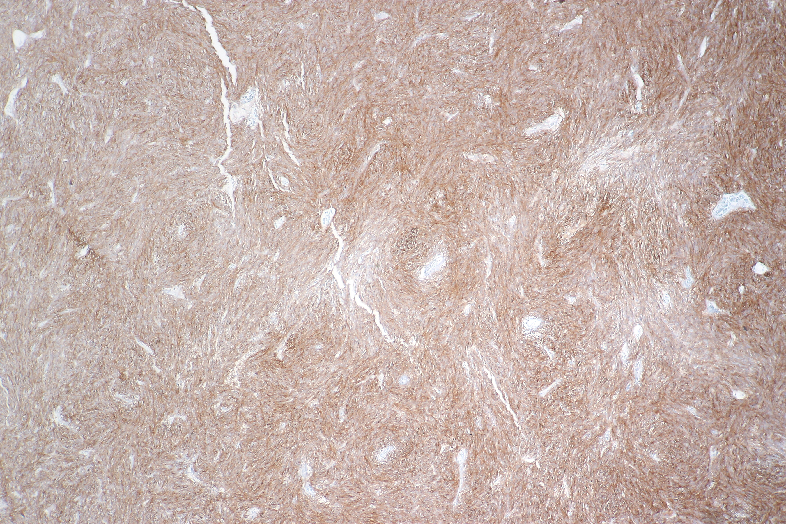
Achado: a marcação marrom difusa de fundo é o CD117 (c-KIT) positivo — a regra de ouro que confirma o GIST.
Imuno-histoquímica DAB. CoRus13, Wikimedia Commons · CC BY-SA 4.0. Ver fonte.
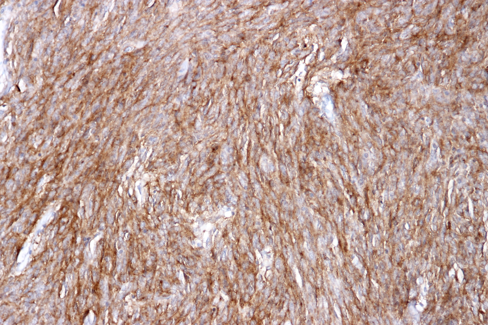
Achado: a mesma positividade marrom, agora para DOG1 — o co-principal que anda ao lado do c-KIT e resgata os GIST CD117-negativos.
Imuno-histoquímica DAB. CoRus13, Wikimedia Commons · CC BY-SA 4.0. Ver fonte.
c-KIT é CD117 — mesmo crachá, dois nomes. E hoje ele anda de braço dado com o DOG1.
Não confunda
CD117 e c-KIT NÃO são marcadores diferentes — são o mesmo. Confundir isso é erro clássico de quem decorou sigla sem entender.
Resumo operacional
c-KIT (= CD117) é a regra de ouro; DOG1 ao lado (cobertura ~99%); CD34 e PDGFRA secundários. Confirmado o crachá no laboratório, surge um paradoxo — para chegar ao diagnóstico, a regra é justamente não biopsiar de cara.
Quiz — fixação
Qual a relação entre CD117 e c-KIT no diagnóstico do GIST?
Gabarito: C. CD117 (antígeno) e c-KIT (receptor) designam o mesmo marcador — a regra de ouro do GIST.
Por que cair na A: tratá-los como distintos é o erro que a sigla dupla provoca.
O DOG1 substituiu o c-KIT como marcador principal do GIST.
Falso. DOG1 entra AO LADO do c-KIT como co-principal; juntos cobrem ~99%, mas o c-KIT segue sendo a regra de ouro.
Qual par de marcadores é considerado secundário no painel do GIST?
Gabarito: B. CD34 e PDGFRA são os secundários; c-KIT/CD117 e DOG1 são os principais.
Por que cair na A: inverte a hierarquia — c-KIT e DOG1 são justamente os co-principais.
Página 5 / 13
SubmucosoNão biopsiarAspecto macroscópico
O reflexo que a banca explora
Lesão gástrica? Endoscopia, e em seguida a biópsia.
No GIST esse reflexo está errado — e a banca sabe disso. O diagnóstico nasce do aspecto macroscópico, não da pinça.
O tumor que você não deve biopsiar
Comece pelo que você já domina. No câncer gástrico clássico, o adenocarcinoma, o caminho é uma sequência conhecida: endoscopia, identificação da lesão suspeita, biópsia. A biópsia confirma o adenocarcinoma porque o tumor está na mucosa — bem ao alcance da pinça.
No GIST, o roteiro muda. O diagnóstico ainda passa pela endoscopia, mas não pela biópsia — e sim pela análise do aspecto macroscópico da lesão. A princípio, no GIST não se faz biópsia. E há uma razão estrutural elegante para isso: o GIST se forma de maneira intramural (submucosa). Ele cresce dentro da parede, sob a mucosa íntegra, abaulando-a por baixo. A pinça, que morde a superfície, frequentemente pega só mucosa normal por cima — e erra o tumor que está mais fundo.
Achado: repare no abaulamento arredondado de superfície lisa que ergue a mucosa por baixo, sem úlcera nem lesão da mucosa por cima — a pinça morderia só o teto íntegro e erraria o tumor.
Endoscopia digestiva alta. Kasatani S et al., Asian J Endosc Surg 2025, via PMC (PMC12314345), Fig. 2 · CC BY-NC-ND 4.0. Ver fonte.
É por isso que o aspecto macroscópico vale tanto. O GIST tem uma assinatura visual: lesão mais arredondada e frequentemente mais brilhante, recoberta por mucosa lisa e íntegra — o clássico abaulamento submucoso. Esse padrão, somado ao contexto, já direciona o diagnóstico sem a pinça. Mas atenção ao limite do que o olho enxerga: o que a endoscopia mostra não reflete a real invasão intramural. Ela dá ideia da extensão superficial, mas não da profundidade com que o tumor invade a parede — e essa profundidade é o que mais importa para o estadiamento.
A ponta do iceberg. Clique nas estruturas desenhadas (mouse, toque ou teclado) para revelar a interpretação clínica.
Esquema interativo
Toque numa estrutura do esquema para ver a leitura clínica.
Então quando se biopsia? Apenas em duas situações: lesão irressecável ou doença metastática — cenários mais raros. Nesses casos, a biópsia tem propósito específico: confirmar o GIST para então indicar terapia sistêmica — seja neoadjuvância para reduzir a lesão, seja tratamento da doença avançada. Fora disso, a regra permanece: olha-se, não se morde.
Densificação
Quando a biópsia é indicada (lesão irressecável ou metastática), a via de escolha é a punção pela própria ecoendoscopia (EUS-FNA/FNB) — a mesma ultrassonografia endoscópica que mede o T faz a punção, evitando a via percutânea e o risco de ruptura do tumor friável.
Pegadinha de prova
"Como se confirma o GIST?" — a resposta-armadilha é "biópsia". A resposta certa é aspecto macroscópico à endoscopia; biópsia só se irressecável ou metastático.
Não confunda — adenocarcinoma × GIST
Adenocarcinoma
Lesão na mucosa. A biópsia confirma — a pinça alcança o tumor na superfície.
GIST
Lesão submucosa. Biópsia de rotina não — o tumor está fundo, sob mucosa íntegra.
Revisão ativa
Por que a pinça da endoscopia tende a "errar" o GIST?
O que muda no objetivo da biópsia quando a lesão é irressecável ou metastática?
Como você defenderia, para um colega, a frase "no GIST se olha, não se morde"?
Resumo operacional
GIST = diagnóstico pelo aspecto macro endoscópico (arredondado/brilhante, submucoso); biópsia só se irressecável ou metastático. Se a profundidade escapa à endoscopia, falta a ferramenta que mede a invasão dentro da parede.
Quiz — fixação
Em um GIST gástrico ressecável típico, qual a conduta diagnóstica de regra?
Gabarito: B. O GIST é submucoso; a biópsia de rotina não se faz — vale o aspecto macro.
Por que cair na A: é o reflexo do adenocarcinoma aplicado ao tumor errado.
A endoscopia revela com precisão a profundidade de invasão intramural do GIST.
Falso. Ela mostra o abaulamento superficial; a profundidade escapa — por isso se complementa com USE/TC.
Atenção: a endoscopia é ótima para ver a superfície, péssima para medir o quão fundo o tumor invade.
A biópsia no GIST é indicada em qual cenário?
Gabarito: C. Só nas duas situações em que a confirmação muda a conduta para terapia sistêmica.
Por que cair na A: generalizar a biópsia ignora que o GIST ressecável dispensa a pinça.
Página 6 / 13
USE = exame do TTC = extensão/metástaseInvasão de parede
A pergunta que a endoscopia não responde
A endoscopia mostrou um abaulamento submucoso arredondado e brilhante na parede gástrica. O diagnóstico de GIST está encaminhado. Mas há uma pergunta que a endoscopia não responde: quão fundo essa lesão invade a parede?
Enxergar a profundidade: TC e USE
O problema da página anterior fica em aberto: a endoscopia vê a superfície, mas a invasão intramural escapa. Para fechar essa lacuna, complementa-se a avaliação com tomografia ou ultrassonografia endoscópica (USE) — cada uma com um papel.
A USE é o destaque conceitual. Ela vem sendo cada vez mais empregada na avaliação de neoplasias porque faz algo peculiar: avalia, camada por camada, o quanto a lesão invade a parede do órgão. Ao posicionar o transdutor ultrassônico na ponta do endoscópio, ela "enxerga" para dentro da parede — distingue mucosa, submucosa, muscular própria — e identifica de qual camada a lesão nasce e até onde vai. É por isso que a USE é, talvez, o exame mais sensível para avaliar o T — a invasão da lesão dentro da parede. Exatamente o dado que a endoscopia comum não entrega.
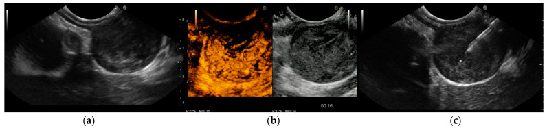
Achado: a USE distingue as camadas e mostra a lesão nascendo da parede (a); o painel da punção guiada (c) é a via de biópsia quando ela é indicada — medindo a invasão como nenhum outro exame.
Ultrassonografia endoscópica. Pallio S, Crinò SF et al., Cancers (Basel) 2023;15(4):1285 (MDPI), via PMC (PMC9954263), Fig. 2 · CC BY 4.0. Ver fonte.
A TC, por sua vez, ainda é o exame mais realizado hoje. Ela é excelente para o panorama: extensão da lesão, relação com estruturas vizinhas, e — fundamental no GIST — rastreio de metástase (fígado e peritônio). O resumo operacional é uma divisão de trabalho: a USE é a ideal para medir invasão de parede; a TC é a mais usada e cobre a extensão e a doença à distância.
O objetivo de fundo dos dois complementos é o mesmo: definir a real extensão e invasão do GIST, já que a invasão intramural escapa ao olho da endoscopia. Sem eles, o estadiamento fica cego para a profundidade — e a profundidade é o que pesa na decisão.
Como a USE lê a invasão. Clique na camada invadida e no transdutor desenhados (mouse, toque ou teclado) para entender o exame.
Esquema interativo
Toque na camada invadida ou no transdutor para ver como a USE lê a parede.
Densificação
Quando a biópsia é indicada (lesão irressecável/metastática), a via de escolha é a punção pela própria ecoendoscopia (EUS-FNA/FNB) — a mesma USE que mede o T faz a punção, evitando a via percutânea e o risco de ruptura e disseminação do tumor friável.
Por que importa na prática
Errar o exame do T é errar o estadiamento. A frase de prova é "USE = melhor para invasão de parede (T); TC = mais realizada, vê extensão e metástase".
Resumo operacional
USE = mais sensível para o T (invasão de parede); TC = mais realizada, avalia extensão e metástase. Estadiada a lesão, abre-se o capítulo do tratamento — e a primeira regra cirúrgica do GIST contraria tudo que se aprende no adenocarcinoma.
Quiz — fixação
Qual exame é considerado o mais sensível para avaliar a invasão de parede (T) no GIST?
Gabarito: B. A USE distingue as camadas da parede e mede a profundidade da invasão.
Por que cair na A: a TC é a mais realizada e vê extensão/metástase, mas não é a melhor para o T local.
A TC é o exame mais realizado hoje no estadiamento do GIST.
Verdadeiro. É o panorama de extensão e o rastreio de metástase; a USE complementa medindo o T.
A USE avalia de forma peculiar o quanto a lesão invade a ______ do órgão.
Parede. Camada por camada, a USE crava até onde o tumor invade.
Página 7 / 13
Margem livre R0Ressecção em cunhaCutoff 2 cm
Adenocarcinoma gástrico
margem de 6 a 8 cm, dependendo do subtipo — infiltra de forma difusa.
vs
GIST
basta 0,5 a 1 cm de margem livre (R0).
Mesmo órgão, mesma faca — princípios opostos. Por quê?
Margem livre basta — esqueça os centímetros
O tratamento de regra do GIST é a ressecção da lesão com margem de segurança. Para a lesão maior que 2 cm, a indicação é direta: resseca com margem. Até aqui, soa como qualquer câncer. A virada está no que significa "margem".
No adenocarcinoma gástrico, a oncologia exige margem ampla, medida em centímetros — fala-se em 6 a 8 cm dependendo do subtipo histológico — porque o adenocarcinoma infiltra a parede de forma difusa e traiçoeira, e uma margem curta deixa célula para trás. No GIST, isso não se aplica. O tumor cresce de forma mais expansiva e delimitada, e a literatura é clara: não se exige margem ampla em centímetros. O que se exige é margem livre — uma ressecção R0, com a borda microscopicamente sem tumor. Na prática, basta cerca de 0,5 a 1 cm de margem livre. O conceito-chave que cai em prova não é o número exato, é o princípio: no GIST, o objetivo é margem livre (R0), não margem ampla.
Isso tem consequência técnica concreta: como não se precisa de grandes margens, o GIST gástrico frequentemente permite ressecções econômicas — em cunha (wedge) ou segmentares — preservando estômago, em vez de gastrectomias amplas. Menos órgão sacrificado, mesmo resultado oncológico. É a biologia do tumor ditando a extensão da cirurgia.
Duas margens, dois tumores. Clique nas zonas de margem desenhadas (mouse, toque ou teclado) para comparar o princípio cirúrgico.
Comparação de margens
Toque numa margem para ver o princípio cirúrgico de cada tumor.
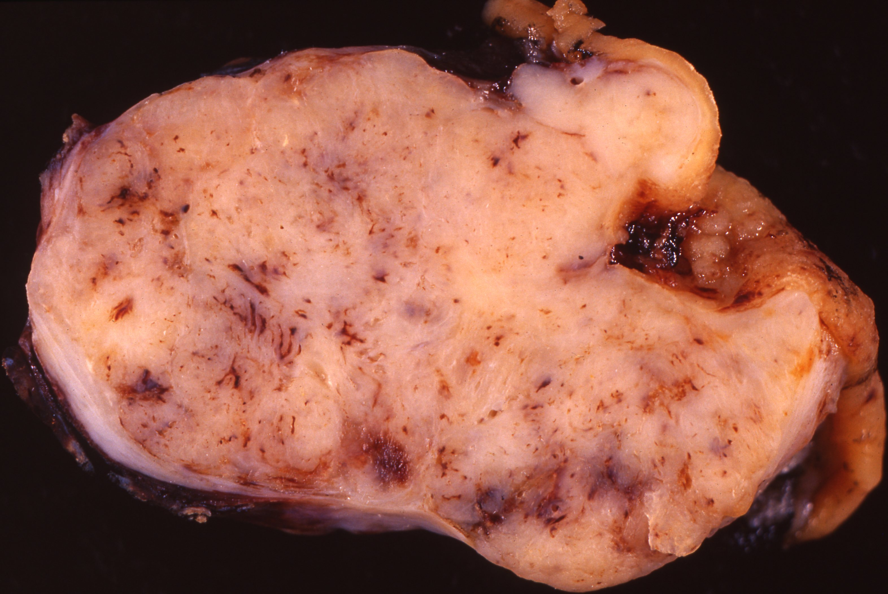
Achado: a lesão foi removida em bloco com um anel de parede gástrica não acometida ao redor — margem livre (R0) basta; não se persegue margem ampla em centímetros como no adenocarcinoma.
Macroscopia (caso de 2001, GIST de 6,5 cm excisado com margem de parede gástrica não acometida). Ed Uthman, MD · Wikimedia Commons · CC BY 2.0. Ver fonte.
O que a banca quer
Que você marque margem livre (R0) e rejeite a alternativa que pede "margem ampla de X cm" — essa é a armadilha que importa a regra do adenocarcinoma.
Não confunda
Margem ampla
Adenocarcinoma — medida em centímetros (6–8 cm), por causa da infiltração difusa.
Margem livre
GIST — R0 basta, ~0,5–1 cm. Tumor expansivo e delimitado, permite cunha.
Resumo operacional
GIST > 2 cm = ressecção com margem livre (R0, ~0,5–1 cm); não se exige margem ampla em centímetros. A margem é só metade da revolução cirúrgica do GIST. A outra metade — e a maior pegadinha do tema — é o que NÃO se tira.
Quiz — fixação
Qual o objetivo de margem na ressecção de um GIST gástrico?
Gabarito: B. No GIST o alvo é R0 (borda microscopicamente livre); não se exige margem ampla.
Por que cair na A: aplicar a regra do adenocarcinoma ao GIST é o erro clássico.
O GIST gástrico exige margens amplas em centímetros como o adenocarcinoma.
Falso. Exige apenas margem livre (R0); ressecções em cunha são suficientes.
Para lesão maior que ______ cm, a conduta é ressecção com margem.
2 cm. Acima desse cutoff, resseca com margem livre — abaixo, há o dilema da próxima página.
Página 8 / 13
Sem linfadenectomiaMetástase hematogênicaFígado e peritônio
O câncer gástrico que não tira linfonodo
Aqui está o "classicão" de prova do GIST, e vale tratá-lo com o peso que merece. No GIST não se faz linfadenectomia. Repita: a cirurgia tira a lesão com margem livre e para por aí — não disseca as cadeias linfonodais como se faz no adenocarcinoma gástrico.
A maldade da banca é exatamente o contraste. O GIST gástrico é um câncer gástrico — está no estômago, é maligno, opera-se. O aluno desatento, no automático, associa "câncer gástrico" a "gastrectomia + linfadenectomia D2", porque foi assim que aprendeu no adenocarcinoma. Mas o GIST não é adenocarcinoma — e justamente por não ser, não leva linfadenectomia. A pegadinha mora nessa ponte falsa entre "é câncer gástrico" e "logo, disseca linfonodo".
A justificativa é biológica e limpa: a metástase do GIST é hematogênica, não linfática. O tumor se dissemina pelo sangue — atingindo preferencialmente fígado e peritônio — e quase nunca pelos linfonodos. O acometimento linfonodal é raro. E se a doença não viaja pela via linfática, não há razão para esvaziar as cadeias linfonodais de rotina. Dissecar linfonodo no GIST seria morbidade sem ganho oncológico.
Por isso o resumo de ouro: tirar a lesão (margem livre) sem linfadenectomia — o gesto que mais aparece em prova de cirurgia oncológica atual. Quem grava "GIST não esvazia linfonodo porque metastatiza pelo sangue" responde a questão antes de terminar de ler o enunciado.
GIST viaja de sangue, não de linfa — então não se esvazia linfonodo.
Por onde o GIST viaja — e por onde não. Clique nos linfonodos riscados, no fígado e no peritônio (mouse, toque ou teclado) para ler a interpretação.
Esquema interativo
Toque numa estrutura do esquema para ver a leitura clínica.
Achado: siga as setas até o nódulo arredondado mais escuro (hipoatenuante) dentro do parênquima hepático — metástase à distância pelo sangue, longe de qualquer cadeia linfonodal.
TC multifásica. Hui C & Sum R, BJR Case Reports 2022 (British Institute of Radiology), via PMC (PMC9499438), Fig. 2 · CC BY 4.0. Ver fonte.
O que a banca quer
O gesto "ressecar com margem livre, sem linfadenectomia", justificado pela metástase hematogênica. O enunciado descreve câncer gástrico e oferece "gastrectomia + linfadenectomia D2" como armadilha.
Revisão ativa
Por que a via de metástase de um tumor determina se a cirurgia inclui ou não linfadenectomia?
Como você desarmaria, numa questão, a alternativa "linfadenectomia D2" oferecida para um GIST?
Se um GIST tivesse metástase predominantemente linfática (hipótese), a conduta cirúrgica mudaria? Como?
Resumo operacional
GIST não leva linfadenectomia (metástase é hematogênica → fígado/peritônio; linfonodo raro). Tirar a lesão com margem livre, só. Definida a cirurgia das lesões maiores, falta o dilema das pequenas — abaixo de 2 cm, operar ou vigiar?
Quiz — fixação
Por que NÃO se realiza linfadenectomia de rotina no GIST?
Gabarito: B. Sem disseminação linfática relevante, esvaziar linfonodo não agrega — só morbidade.
Por que cair na C: o GIST dá sim metástase, mas pelo sangue (fígado/peritônio), não pela linfa.
O GIST gástrico, por ser câncer de estômago, exige linfadenectomia como o adenocarcinoma.
Falso. É a pegadinha central: por NÃO ser adenocarcinoma e metastatizar por via hematogênica, não leva linfadenectomia.
Atenção: "é câncer gástrico, logo disseca linfonodo" é a ponte falsa que a banca arma.
Qual o destino preferencial das metástases do GIST?
Gabarito: C. Disseminação hematogênica/peritoneal — fígado e peritônio.
Por que cair na A: seria o destino se a via fosse linfática — exatamente o que o GIST não usa.
Página 9 / 13
Lesão < 2 cmVigilância endoscópicaSinal de alto risco
Achado incidental — operar ou vigiar?
Endoscopia de rotina por outro motivo. Achado incidental: nódulo submucoso gástrico de 1,4 cm, assintomático, superfície lisa. O paciente pergunta se vai operar. Qual a resposta — e o que a mudaria?
A bifurcação dos 2 cm
Para a lesão menor que 2 cm, a conduta diverge — e por isso ela merece um raciocínio próprio. Existe uma corrente que já indica ressecção mesmo nas pequenas (sempre sem linfadenectomia, como toda cirurgia de GIST). Mas a conduta mais atual e mais cobrada para a lesão < 2 cm assintomática é o acompanhamento endoscópico — vigilância periódica, em vez de cirurgia imediata. A lógica: lesões pequenas e quietas têm risco baixo, e a vigilância evita uma cirurgia possivelmente desnecessária.
A chave está nos gatilhos que viram a conduta de "vigiar" para "operar". São dois grupos:
Sintomas. A lesão pequena costuma ser assintomática, mas nem sempre. Uma retração da parede, por exemplo, pode gerar um quadro gástrico (sangramento, obstrução, dor). Lesão pequena sintomática → resseca. O sintoma tira a lesão da zona de observação.
Sinais endoscópicos de alto risco. Mesmo assintomática, a lesão pequena que mostra parâmetros de risco também é ressecada. Os sinais a memorizar: lesão irregular, ulcerada ou com heterogeneidade. Uma lesão lisa e homogênea pode ser observada; uma lesão com bordas irregulares, ulceração de superfície ou aspecto heterogêneo perde a tranquilidade da vigilância e vai para a ressecção.
A bifurcação dos 2 cm. Clique no ramo de acompanhamento e no de ressecção desenhados (mouse, toque ou teclado) para ver a conduta.
Fluxograma de decisão
Toque num ramo para ver a conduta da lesão pequena.
O resumo da lesão < 2 cm cabe em uma frase: acompanhamento endoscópico de regra; resseca se sintomática ou se houver sinal de alto risco. No caso da abertura — 1,4 cm, assintomático, liso — a resposta é vigilância. Bastaria ulceração, irregularidade ou um sintoma para a conduta virar cirurgia.
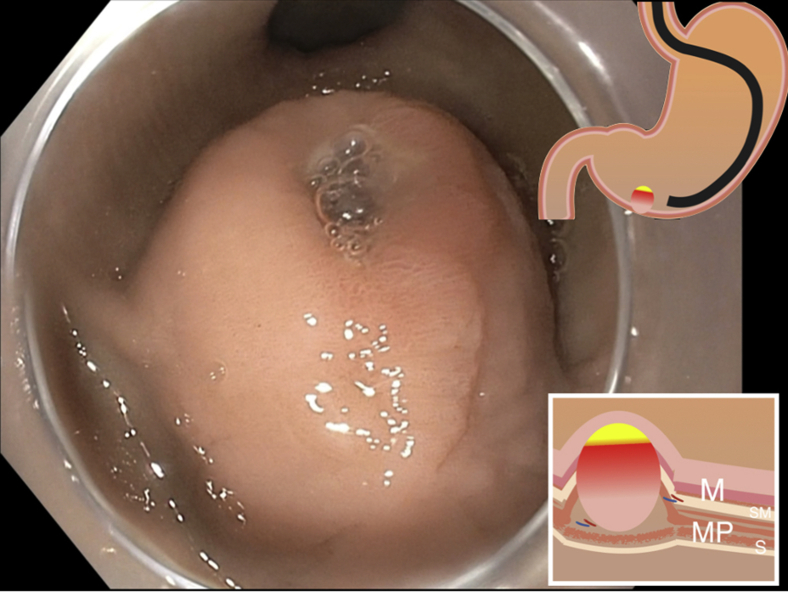
Achado: diferente do abaulamento liso da vigilância, aqui há ulceração central e irregularidade de superfície — o sinal de alto risco que tira a lesão pequena da observação e a manda para a ressecção.
Endoscopia de luz branca. Perales J, Visrodia K, Sethi A, VideoGIE 2021 (Elsevier/ASGE), via PMC (PMC8117606), Fig. 1 · CC BY-NC-ND 4.0. Ver fonte.
Não confunda — a lesão pequena
< 2 cm que se vigia
Assintomática, lisa e homogênea. Acompanhamento endoscópico.
< 2 cm que se resseca
Sintomática OU com ulceração/irregularidade/heterogeneidade. Cirurgia.
O que a banca quer
Na lesão < 2 cm assintomática e sem sinal de risco, a resposta é acompanhamento endoscópico — não cirurgia automática.
Resumo operacional
< 2 cm: acompanhamento endoscópico de regra; resseca se sintomática ou com sinal de alto risco (irregular/ulcerada/heterogênea). Decidida a conduta por tamanho, falta o segundo eixo que define a agressividade — e ele só aparece depois da cirurgia.
Quiz — fixação
GIST gástrico de 1,5 cm, assintomático, liso e homogêneo. Conduta mais atual?
Gabarito: C. Lesão pequena, quieta e sem sinal de risco → vigilância.
Por que cair na B: há corrente que resseca, mas a conduta mais cobrada hoje na lesão quieta é vigiar.
Uma lesão < 2 cm com ulceração e bordas irregulares deve ser apenas acompanhada.
Falso. Sinais de alto risco (irregular/ulcerada/heterogênea) indicam ressecção, mesmo sendo pequena.
A lesão < 2 cm é ressecada se for ______ ou se houver sinal de alto risco.
Sintomática. Sintoma ou sinal de alto risco tira a lesão pequena da vigilância.
Página 10 / 13
Tamanho × mitosesRégua de riscoMitose pós-op
?
Por que uma lesão pequena precisa de muitas mitoses para ser de alto risco, enquanto uma lesão grande precisa de poucas?
Tamanho × mitoses: a régua do risco
O risco do GIST — a chance de ele voltar depois da cirurgia — se avalia cruzando dois parâmetros: o tamanho da lesão e o número de mitoses.
Um detalhe operacional importante: o número de mitoses só é conhecido depois da operação, na análise da peça ressecada (o patologista conta as figuras de mitose). Ou seja, a estratificação completa de risco é um dado pós-operatório — você opera e, com a peça na mão, define o risco e a necessidade de tratamento adicional.
A régua cruza os dois eixos assim:
Lesão menor que 5 cm com 6 a 10 mitoses → risco moderado a alto.
Lesão de 5 a 10 cm → avalia-se a mitose: basta mais de 5 mitoses para subir o risco.
Lesão maior que 5 cm com mais de 5 mitoses, OU maior que 10 cm, OU mais de 10 mitoses → alto risco.
E aqui está a lógica que amarra tudo — a resposta à pergunta de abertura: quanto maior a lesão, menor o número de mitoses necessário para elevar o risco. Tamanho e mitose se compensam. Uma lesão pequena, mesmo com alguma atividade mitótica, ainda pode ser de risco controlado; mas uma lesão grande dispara o risco com pouquíssimas mitoses. Pense nos dois eixos como uma balança: peso em um lado exige menos peso no outro para pender para "alto risco".
Essa matriz não é decoreba solta — é a ponte para a próxima decisão. O resultado dela (risco moderado/alto) é exatamente o que indica ou não a terapia adjuvante com imatinibe.
Tamanho × mitoses. Verde a vermelho: os dois eixos se compensam. Clique numa célula da matriz (mouse, toque ou teclado) para ler a categoria de risco.
Matriz interativa
Toque numa célula da matriz para ver a categoria de risco.
Achado: observe os feixes de células alongadas (fusiformes) com núcleos hipercromáticos — é neste campo, em grande aumento, que o patologista conta as figuras de mitose que definem o segundo eixo do risco.
Histologia H&E. CoRus13, Wikimedia Commons · CC BY-SA 4.0. Ver fonte.
O que a banca quer
Cruzar tamanho e mitoses para classificar o risco, entendendo que tamanho e mitose se compensam — e que o risco moderado/alto é o que indica o imatinibe adjuvante.
Resumo operacional
Risco = tamanho × mitoses (mitoses contadas na peça pós-op); os dois eixos se compensam; o risco moderado/alto é o que indica o imatinibe adjuvante. Definido quem é de alto risco, entra em cena o remédio que mudou o prognóstico — e ele age sobre o mesmo c-KIT que confirmou o diagnóstico.
Quiz — fixação
Quando o número de mitoses do GIST é conhecido?
Gabarito: C. A contagem mitótica é feita pelo patologista na peça — dado pós-operatório.
Por que cair na B: a USE mede o T (invasão de parede), mas não conta mitoses — isso só sai na peça.
Quanto maior a lesão, menor o número de mitoses necessário para elevar o risco.
Verdadeiro. É a lógica de compensação da matriz: os dois eixos se equilibram como uma balança.
Atenção: negar isso é tratar tamanho e mitose como independentes — o oposto da régua.
Lesão maior que 10 cm, independentemente de outros fatores, classifica-se como:
Gabarito: C. Lesão maior que 10 cm (assim como mais de 10 mitoses) já caracteriza alto risco pela régua.
Por que cair na D: o tamanho sozinho já decide — não precisa esperar a contagem para cravar alto risco.
Página 11 / 13
Imatinibe (Glivec)Inibidor de tirosina quinaseAlvo = c-KIT
O c-KIT diagnostica
positivo na imuno-histoquímica, ele confirma o GIST no laboratório.
=
O c-KIT trata
o mesmo receptor é o alvo do imatinibe — a chave que entra na fechadura e a trava.
Diagnóstico e terapia apontam para a mesma proteína. Quem entendeu o c-KIT já entende o imatinibe.
Imatinibe: a chave que entra na fechadura errada
O imatinibe — o famoso Glivec — é um inibidor de tirosina quinase usado no GIST. Para entender por que ele funciona, volte ao c-KIT da página do diagnóstico. O c-KIT (CD117) não é só um marcador: é um receptor de tirosina quinase na membrana da célula tumoral. No GIST, esse receptor costuma estar mutado e permanentemente ligado — como uma fechadura travada na posição "ligada", disparando continuamente os sinais que mandam a célula proliferar. É essa ativação constante que faz o tumor crescer.
O imatinibe age exatamente nesse ponto. Ele é uma molécula desenhada para ocupar o sítio da tirosina quinase do c-KIT e bloquear a via de sinalização. Sem o sinal de proliferação, a célula tumoral perde o motor que a mantinha em divisão. É a lógica da terapia-alvo: em vez de um veneno que atinge toda célula que se divide (como a quimioterapia clássica), o imatinibe mira a engrenagem molecular específica que dá ao GIST sua identidade.
E é por isso que o c-KIT amarra todo o raciocínio num círculo elegante: o mesmo receptor que, positivo na imuno-histoquímica, confirma o diagnóstico é o alvo molecular que o tratamento bloqueia. Diagnóstico e terapia apontam para a mesma proteína. Quem entendeu o c-KIT lá no painel imuno já entende, sem esforço, por que o imatinibe funciona.
Como o imatinibe desliga o GIST. Clique no receptor c-KIT e na molécula de imatinibe desenhados (mouse, toque ou teclado) para ver o mecanismo.
Mecanismo da terapia-alvo
Toque no receptor ou na molécula para ver o mecanismo do imatinibe.
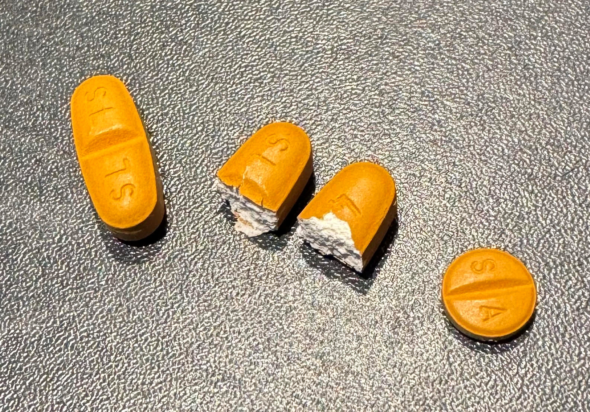
Achado: os comprimidos de imatinibe (Glivec) — 400 mg e 100 mg — o inibidor de tirosina quinase que bloqueia o c-KIT e transformou o prognóstico do GIST. A dose padrão é 400 mg/dia.
Foto de produto. Tontonflingueur, Wikimedia Commons · CC BY-SA 4.0. Ver fonte.
O c-KIT diagnostica e o c-KIT trata — marcador e alvo são a mesma proteína.
Por que importa na prática
Entender que o c-KIT é alvo terapêutico explica por que o painel imuno não é só diagnóstico — ele aponta o tratamento.
Resumo operacional
Imatinibe (Glivec) = inibidor de tirosina quinase que bloqueia o c-KIT; o mesmo receptor que diagnostica é o que se trata. Sabendo COMO ele age, falta o QUANDO — as três situações em que entra, e por quanto tempo no pós-operatório.
Quiz — fixação
Qual o mecanismo de ação do imatinibe no GIST?
Gabarito: B. É terapia-alvo: ocupa o sítio quinase do c-KIT e corta o sinal de proliferação.
Por que cair na A: confunde terapia-alvo com quimioterapia citotóxica clássica.
O c-KIT serve tanto como marcador diagnóstico quanto como alvo terapêutico no GIST.
Verdadeiro. O mesmo receptor que a imuno-histoquímica detecta é o que o imatinibe bloqueia.
O imatinibe (Glivec) é um inibidor de ______ que age sobre o c-KIT.
Tirosina quinase. É o sítio do c-KIT que o imatinibe ocupa e bloqueia.
Página 12 / 13
3 indicaçõesAdjuvância 3 anosNeoadjuvância
Ao final desta página você vai saber responder:
As 3 situações em que o imatinibe entra no GIST
Por que o risco moderado/alto da matriz é o gatilho da adjuvância
Por quantos anos se faz o imatinibe adjuvante no alto risco
O que fazer com a lesão irressecável e com a recorrente
As 3 portas do imatinibe + os 3 anos
O imatinibe tem três portas de entrada no GIST. Vale fixá-las uma a uma.
Porta 1 — Doença metastática (e irressecável). Quando o GIST já se disseminou ou não pode ser operado, o imatinibe é o tratamento de primeira linha — a terapia sistêmica que controla a doença avançada. Aqui o remédio é o protagonista do tratamento.
Porta 2 — Adjuvância em risco moderado ou alto. Essa porta conecta diretamente com a matriz da página anterior. A lesão é ressecada, mas se a estratificação por tamanho × mitoses apontou risco moderado ou alto de recorrência, a cirurgia sozinha não basta: faz-se imatinibe no pós-operatório (adjuvância) para reduzir a chance de o tumor voltar. É exatamente por isso que a matriz de risco importa tanto — ela define quem recebe adjuvância. E aqui está o número de prova: no alto risco, o imatinibe adjuvante é feito por 3 anos (padrão consolidado). Esse é o dado que a banca cobra — resseca, estratifica, e se alto risco, 3 anos de imatinibe.
Porta 3 — Neoadjuvância na lesão irressecável. Quando a lesão é irressecável de início, a sequência muda: faz-se a biópsia (uma das duas exceções da regra anti-biópsia), confirma-se o GIST e usa-se o imatinibe como neoadjuvância — com o objetivo de reduzir a lesão e torná-la ressecável. O remédio aqui é a ponte que leva o tumor de volta à mesa de cirurgia.
Há ainda um cenário-síntese que reúne a lógica das portas: a lesão recorrente passível de ressecção — se o GIST voltou mas ainda dá para operar, a conduta é ressecar e fazer imatinibe. Cirurgia onde é possível, remédio-alvo para segurar o que a cirurgia não alcança.
As três portas do imatinibe. Clique em cada cenário desenhado (mouse, toque ou teclado) para ver a linha de tratamento.
As portas do imatinibe
Toque num cenário para ver a linha de tratamento — a adjuvância destaca os 3 anos no alto risco.
Note o fio condutor: o imatinibe se posiciona conforme a doença pode ou não ser operada e conforme o risco de volta. Operável de baixo risco → só cirurgia. Operável de alto risco → cirurgia + 3 anos de imatinibe. Irressecável → biópsia + imatinibe (neoadjuvante ou para doença avançada). Recorrente ressecável → ressecar + imatinibe.
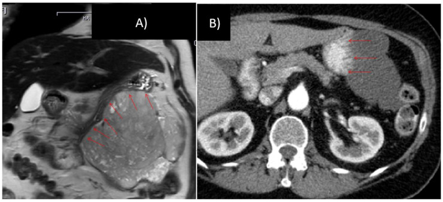
Achado: compare os dois tempos — antes (A) a massa é volumosa; após 10 meses de imatinibe neoadjuvante (B) ela reduz nitidamente, e a cirurgia planejada deixa de ser multivisceral.
Imagem pré/pós-tratamento. Vassos N, Jakob J, Kähler G et al., Cancers (Basel) 2021;13(4):586 (MDPI), via PMC (PMC7913129), Fig. 3 · CC BY 4.0. Ver fonte.
O que a banca quer
As 3 indicações nominais + o número 3 anos na adjuvância de alto risco.
O que diferencia o aluno avançado
Saber que 3 anos é o padrão vigente e que o estudo que testou 6 anos (IMADGIST 2024) ainda não virou recomendação formal — citar 6 anos como padrão é erro. Há tendência de discussão sobre prolongar a adjuvância em casos selecionados de altíssimo risco, mas 3 anos segue sendo o padrão de prova.
Resumo operacional
Imatinibe em 3 cenários — metastático/irressecável (1ª linha), adjuvância risco mod/alto (3 anos no alto risco), neoadjuvância no irressecável (após biópsia). Recorrente ressecável: ressecar + imatinibe. Com as condutas dominadas, vale percorrer um GIST do começo ao fim.
Quiz — fixação
Por quanto tempo se faz o imatinibe adjuvante no GIST de alto risco?
Gabarito: C. 3 anos é o padrão vigente (BR/ESMO/NCCN).
Por que cair na D: na adjuvância a duração é definida (3 anos); uso indefinido é a lógica da doença metastática.
A indicação de adjuvância com imatinibe depende do risco estratificado por tamanho × mitoses.
Verdadeiro. Risco moderado/alto na matriz é o gatilho da adjuvância — por isso a estratificação importa.
Diante de um GIST irressecável, qual a sequência correta?
Gabarito: B. Irressecável é uma das exceções que pede biópsia; depois, imatinibe para reduzir e reabrir a janela cirúrgica.
Por que cair na A: ignora que o irressecável precisa primeiro reduzir com imatinibe.
Página 13 / 13
SínteseCaso integradorRaciocínio completo
Um caso encadeia a trilha inteira
Homem, achado de massa gástrica submucosa de 6 cm, arredondada e brilhante à endoscopia, mucosa íntegra. Acompanhe cada decisão — e veja como a trilha inteira cabe num caso.
Fechando o raciocínio: um GIST do começo ao fim
Percorra o caso decisão por decisão; cada passo é uma página da trilha.
É um GIST? A lesão submucosa arredondada e brilhante, recoberta por mucosa íntegra, tem a assinatura macroscópica do GIST — sarcoma de origem mesenquimal, nascido das células de Cajal, o marcapasso da peristalse abundante no estômago. O estômago é o sítio mais comum (~60%), então a hipótese é forte. Não se biopsia de rotina: o aspecto macro à endoscopia direciona, e a lesão é ressecável.
Como estadiar? A endoscopia não mostra a profundidade. Entra a USE — o exame mais sensível para o T, medindo a invasão de parede — e a TC, a mais realizada, para extensão e rastreio de metástase (fígado/peritônio). Sem doença à distância, a lesão de 6 cm é ressecável.
Como operar? Ressecção com margem livre (R0) — basta 0,5–1 cm, sem a margem ampla do adenocarcinoma — e sem linfadenectomia, porque a metástase do GIST é hematogênica, não linfática. (Se fosse < 2 cm assintomática e lisa, a conduta seria vigilância endoscópica; mas 6 cm se resseca.)
Qual o risco? Com a peça na mão, conta-se a mitose. Cruzando tamanho × mitoses: uma lesão de 6 cm (> 5 cm) com mais de 5 mitoses cai em alto risco — e tamanho e mitose se compensam.
Precisa de remédio? Alto risco aciona a adjuvância: imatinibe (Glivec), inibidor de tirosina quinase que bloqueia o mesmo c-KIT que confirmaria o diagnóstico na imuno-histoquímica (ao lado do DOG1), por 3 anos. Se a lesão tivesse vindo irressecável, a sequência seria outra: biópsia, confirmar, imatinibe neoadjuvante para reduzir e reabrir a cirurgia.
Esse é o GIST inteiro num caso: sarcoma de Cajal → diagnóstico pelo olhar → USE/TC → ressecção R0 sem linfonodo → risco por tamanho×mitose → imatinibe quando o risco manda. Cada elo se encaixa no anterior — não há item solto.
O GIST gástrico em uma linha. Clique em cada nó da trilha desenhado (mouse, toque ou teclado) para revisar o ponto.
A linha do raciocínio
Toque num nó da trilha para revisar o conceito-chave de cada passo.
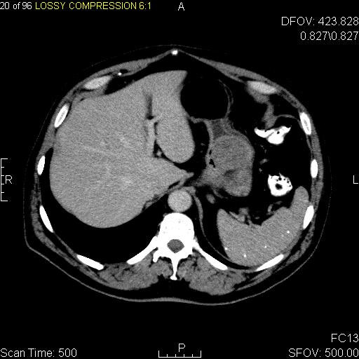
Achado: na TC axial com contraste, o GIST aparece como massa de partes moles bem delimitada que se realça, brotando da parede gástrica — o mesmo abaulamento submucoso que abriu a trilha à endoscopia, agora no estadiamento que precede a ressecção R0.
TC axial de abdome com contraste, GIST da cárdia/fundo gástrico. Jto410 · Wikimedia Commons · CC BY-SA 3.0. Ver fonte.
Revisão ativa
Em qual ponto deste caso a conduta mudaria se a lesão tivesse 1,5 cm, lisa e assintomática?
Em qual ponto mudaria se a lesão fosse irressecável de início?
Qual único conceito (origem mesenquimal) explica, sozinho, a maioria das "exceções" do GIST?
Resumo operacional
GIST = sarcoma de Cajal → diagnóstico macro (sem biópsia) → USE/TC → ressecção R0 sem linfadenectomia (metástase hematogênica) → risco tamanho×mitoses → imatinibe (3 anos no alto risco; neoadjuvante no irressecável). Uma raiz mesenquimal que explica cada desvio em relação ao adenocarcinoma.
Quiz — fixação
Lesão gástrica submucosa de 6 cm, ressecável, confirmada GIST, com 8 mitoses na peça. Conduta completa?
Gabarito: A. 6 cm com >5 mitoses = alto risco → ressecção R0 sem linfonodo + 3 anos de imatinibe.
Por que cair na B: aplica a régua do adenocarcinoma; a D serve ao irressecável, e esta lesão é ressecável.
A origem mesenquimal do GIST explica, de uma só vez, por que não se biopsia de rotina, não se faz linfadenectomia e existe terapia-alvo.
Verdadeiro. A raiz mesenquimal/Cajal (lesão submucosa, c-KIT, metástase hematogênica) é o fio que conecta todas as "exceções".
Se a mesma lesão tivesse vindo irressecável, o primeiro passo seria:
Gabarito: B. Irressecável é exceção que pede biópsia; depois, imatinibe para reduzir e tornar ressecável.
Por que cair na A: não dá para ressecar de imediato o que é irressecável — primeiro reduz com imatinibe.
Fim da Aula Extra 1
GIST gástrico do começo ao fim: sarcoma de Cajal, diagnóstico pelo olhar, ressecção R0 sem linfonodo, risco por tamanho × mitoses e imatinibe quando o risco manda. Voltar ao sumário.